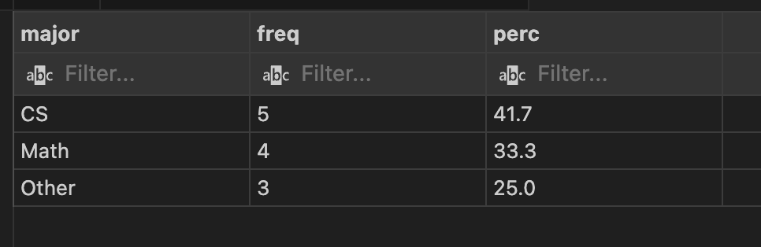
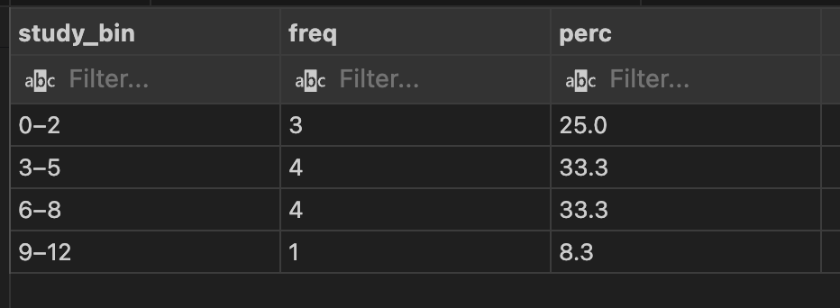
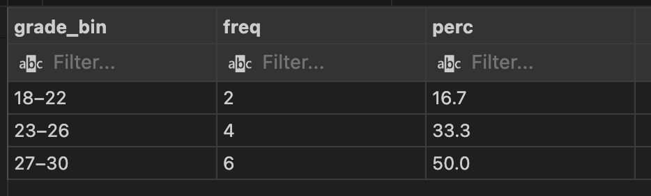
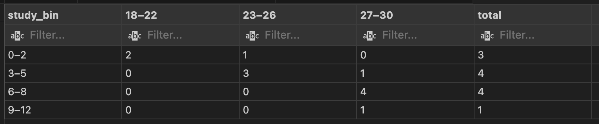

Understanding Datasets and Distributions
What is a Dataset?
A dataset is a structured collection of data organized in rows (observations) and columns (variables). Each row represents one case, while each column represents a measurable attribute. In this homework, I created a small dataset of students with the following variables:
- major – study area (e.g. CS, Math, Other)
- study_hours – weekly study time
- exam_grade – exam score (18–30)
Database creation (PostgreSQL)
The dataset was created locally using PostgreSQL inside Visual Studio Code via SQLTools. The goal was to simulate a small population of students with their study time and exam grades.
Step 1 – Create the table
DROP TABLE IF EXISTS students_study;
CREATE TABLE students_study (
id SERIAL PRIMARY KEY,
student_code TEXT,
major TEXT,
study_hours INT,
exam_grade INT
);This table stores a tiny sample of students (id, code, major, weekly study time, and exam grade 18–30).
Step 2 – Insert data
INSERT INTO students_study (student_code, major, study_hours, exam_grade) VALUES
('S01','CS',2,24),
('S02','CS',5,27),
('S03','CS',7,29),
('S04','Math',1,22),
('S05','Math',4,26),
('S06','Math',6,28),
('S07','Other',3,23),
('S08','Other',5,25),
('S09','CS',9,30),
('S10','CS',0,18),
('S11','Math',8,30),
('S12','Other',6,27);I inserted 12 rows to have enough variability for univariate and bivariate summaries.
Univariate Distributions
I computed three univariate distributions with SQL.
3A) Distribution of major
SELECT
major,
COUNT(*) AS freq,
ROUND(100.0 * COUNT(*) / SUM(COUNT(*)) OVER (), 1) AS perc
FROM students_study
GROUP BY major
ORDER BY freq DESC;
Comment. CS is the most represented major, followed by Math and Other. The sample is reasonably balanced.
3B) Distribution of study_hours (binned)
WITH b AS (
SELECT
CASE width_bucket(study_hours, 0, 12, 4)
WHEN 1 THEN '0–2'
WHEN 2 THEN '3–5'
WHEN 3 THEN '6–8'
WHEN 4 THEN '9–12'
END AS study_bin
FROM students_study
)
SELECT
study_bin,
COUNT(*) AS freq,
ROUND(100.0 * COUNT(*) / SUM(COUNT(*)) OVER (), 1) AS perc
FROM b
GROUP BY study_bin
ORDER BY study_bin;
Comment. Most students study 3–8 hours/week (~66%); very low and very high study time are rarer.
3C) Distribution of exam_grade (binned)
WITH g AS (
SELECT
CASE
WHEN exam_grade BETWEEN 18 AND 22 THEN '18–22'
WHEN exam_grade BETWEEN 23 AND 26 THEN '23–26'
WHEN exam_grade BETWEEN 27 AND 30 THEN '27–30'
END AS grade_bin
FROM students_study
)
SELECT
grade_bin,
COUNT(*) AS freq,
ROUND(100.0 * COUNT(*) / SUM(COUNT(*)) OVER (), 1) AS perc
FROM g
GROUP BY grade_bin
ORDER BY grade_bin;
Comment. Half of the sample lies in the 27–30 band, showing a skew toward higher grades.
Bivariate Distribution — study_bin × grade_bin
WITH s AS (
SELECT
CASE width_bucket(study_hours, 0, 12, 4)
WHEN 1 THEN '0–2'
WHEN 2 THEN '3–5'
WHEN 3 THEN '6–8'
WHEN 4 THEN '9–12'
END AS study_bin,
CASE
WHEN exam_grade BETWEEN 18 AND 22 THEN '18–22'
WHEN exam_grade BETWEEN 23 AND 26 THEN '23–26'
WHEN exam_grade BETWEEN 27 AND 30 THEN '27–30'
END AS grade_bin
FROM students_study
)
SELECT
study_bin,
SUM(CASE WHEN grade_bin='18–22' THEN 1 ELSE 0 END) AS "18–22",
SUM(CASE WHEN grade_bin='23–26' THEN 1 ELSE 0 END) AS "23–26",
SUM(CASE WHEN grade_bin='27–30' THEN 1 ELSE 0 END) AS "27–30",
COUNT(*) AS total
FROM s
GROUP BY study_bin
ORDER BY study_bin;
Comment. As study time increases, high grades become more frequent. The 6–8h group is entirely 27–30 (4/4), while the 0–2h group shows only low/mid grades. (Small sample caveat.)
Conclusion
From these analyses, I observe how data organization and statistical distributions help uncover patterns in datasets. This basic approach forms the foundation of descriptive statistics — turning data into insight.
Text Encoding & Decoding (Frequency Analysis + Caesar)
Goal
In this part I developed, in JavaScript, a small system that: (1) normalizes and analyzes a text (letter counts and relative frequencies), (2) encrypts it using the Caesar cipher, and (3) automatically decodes the ciphertext without knowing the key, by comparing its letter distribution with the theoretical frequency profiles of English and Italian.
My goal was to explore how simple statistical models can reveal hidden structures in encrypted text and how language recognition can be automated using data.
Theory (short)
- Caesar cipher: a monoalphabetic substitution with a fixed shift (e.g.,
k=3⇒ A→D, B→E…, wrapping Z→C). Historically important but weak today. - Frequency analysis: counting letters; each language shows a characteristic distribution (E,T,A,O in English; E,A,I,O in Italian).
- Language profiles: average A–Z percentages estimated from large corpora. Values vary by source, but the overall shape is stable and useful for matching.
- Statistical scoring: we use the chi-square (χ²) distance to assess similarity between an observed distribution and a language profile (lower is better).
My Creative Decoding Approach
Below I describe my own creative decoding method, which I designed for this assignment.
The aim of my experiment was not only to build a basic Caesar cipher decoder, but to design a creative and data-driven algorithm capable of automatically recognizing the language and recovering the key by relying on statistical patterns.
Instead of simply trying all 26 possible shifts, my script applies a frequency analysis using the chi-square (χ²) score, comparing the observed letter distribution of the ciphertext with the theoretical distributions of both English and Italian. The algorithm then automatically selects the language and shift that minimize the χ² distance — that is, the most likely match to a real language.
The decoding process follows these steps:
- Normalize the text → convert to uppercase, remove accents, keep only A–Z;
- Compute letter frequencies (absolute and relative);
- For each language (EN/IT) and shift (0–25), compute the χ² distance between observed and theoretical distributions;
- Select the combination (language, shift) with the lowest χ² score;
- Return both the recognized language and the decoded text.
This approach is original and creative because it combines statistical reasoning with automatic language recognition. It demonstrates how frequency analysis — one of the oldest cryptanalytic methods — can be automated to identify both the language and the correct shift, turning data patterns into insight.
What I built
- Normalization: I convert all characters to uppercase, remove diacritics, and keep only A–Z.
- Counting & frequency analysis: I compute absolute counts and relative percentages for each letter.
- Encryption: I apply
caesar(text, k)with circular shifting (Z→A) while keeping punctuation and spaces unchanged. - Automatic decoding: For each language (EN/IT) and shift 0–25, I calculate the χ² distance between observed and theoretical frequencies and select the best match — both the language and the key.
Why it works
When letters are shifted by a constant value, the general frequency pattern of the text remains unchanged — it is only displaced. My algorithm essentially tries to realign this pattern to the most plausible language profile. On short texts the result may be unstable, but on longer ones the frequency structure becomes clear enough to reveal both the language and the key.
Try it
Output
Top letters (observed)
Step-by-step method (technical)
- Pre-processing —
normalizeText(): NFD + remove diacritics, uppercase, keep A–Z. - Frequencies —
countFreq(): absolute and relative vectors over 26 letters; a small “Top letters” table. - Encryption —
caesar(text, k): circular shift byk; punctuation/spaces unaffected. - Decoding —
autoDecode(): for each language L ∈ {EN, IT}, fork=0..25, compute candidatecand = caesar(cipher, -k), thenχ²(freq(cand), profile[L]). Choose the global minimum.
Experiments & Results
Below I report real tests that I performed with my own implementation. I included both English and Italian examples to verify that my algorithm can detect the correct language and shift.
Test 1 — English pangram, k = 3
Plaintext: THE QUICK BROWN FOX JUMPS OVER THE LAZY DOG.
Cipher (k=3): WKH TXLFN EURZQ IRA MXPSV RYHU WKH ODCB GRJ.
Auto-decode (EN/IT): lang = en, shift = 3 → Decoded OK? true
Test 2 — Italian sentence, k = 7
Plaintext: CIAO A TUTTI, QUESTO E' UN TEST DI PROVA.
Cipher (k=7): JPHV H ABAAP, XBLZAV L' BU ALZA KP WYVCH.
Auto-decode (EN/IT): lang = it, shift = 7 → Decoded OK? true
Test 3 — Short text caveat (HELLO WORLD, k=10)
Plaintext: HELLO WORLD → Cipher: ROVVY GYBVN
Auto-decode (EN/IT): lang = it, shift = 13 → Decoded: EBIIL TLOIA (not original)
Test 4 — End-to-end demo, k = 3
Plaintext: Cybersecurity is about protecting data.
Cipher (k=3): Fbehuvhfxulwb lv derxw surwhfwlqj gdwd.
Auto-decode (EN/IT): lang = en, shift = 3 → Decoded OK? true
Final Tests
Test A
Analyze (from my UI): Length (A–Z only) = 4177 · Top letters = E, T, S, I, A, O, R, N
Plaintext — FULL
In cryptography, a Caesar cipher, also known as Caesar's cipher, the shift cipher, Caesar's code, or Caesar shift, is one of the simplest and most widely known encryption techniques. It is a type of substitution cipher in which each letter in the plaintext is replaced by a letter some fixed number of positions down the alphabet. For example, with a left shift of 3, D would be replaced by A, E would become B, and so on.[1] The method is named after Julius Caesar, who used it in his private correspondence.
The encryption step performed by a Caesar cipher is often incorporated as part of more complex schemes, such as the Vigenère cipher, and still has modern application in the ROT13 system. As with all single-alphabet substitution ciphers, the Caesar cipher is easily broken and in modern practice offers essentially no communications security.
The Caesar cipher is named after Julius Caesar, who, according to Suetonius, used it with a shift of three (A becoming D when encrypting, and D becoming A when decrypting) to protect messages of military significance.[5] While Caesar's was the first recorded use of this scheme, other substitution ciphers are known to have been used earlier.[6][7]
"If he had anything confidential to say, he wrote it in cipher, that is, by so changing the order of the letters of the alphabet, that not a word could be made out. If anyone wishes to decipher these, and get at their meaning, he must substitute the fourth letter of the alphabet, namely D, for A, and so with the others."
— Suetonius, Life of Julius Caesar 56
His nephew, Augustus, also used the cipher, but with a right shift of one, and it did not wrap around to the beginning of the alphabet:
"Whenever he wrote in cipher, he wrote B for A, C for B, and the rest of the letters on the same principle, using AA for Z."
— Suetonius, Life of Augustus 88
Evidence exists that Julius Caesar also used more complicated systems,[8] and one writer, Aulus Gellius, refers to a (now lost) treatise on his ciphers:
"There is even a rather ingeniously written treatise by the grammarian Probus concerning the secret meaning of letters in the composition of Caesar's epistles."
— Aulus Gellius, Attic Nights 17.9.1–5
It is unknown how effective the Caesar cipher was at the time; there is no record at that time of any techniques for the solution of simple substitution ciphers. The earliest surviving records date to the 9th-century works of Al-Kindi in the Arab world with the discovery of frequency analysis.[9]
A piece of text encrypted in a Hebrew version of the Caesar cipher not to be confused with Atbash, is sometimes found on the back of Jewish mezuzah scrolls. When each letter is replaced with the letter before it in the Hebrew alphabet the text translates as "YHWH, our God, YHWH", a quotation from the main part of the scroll.[10][11]
In the 19th century, the personal advertisements section in newspapers would sometimes be used to exchange messages encrypted using simple cipher schemes. David Kahn (1967) describes instances of lovers engaging in secret communications enciphered using the Caesar cipher in The Times.[12] Even as late as 1915, the Caesar cipher was in use: the Russian army employed it as a replacement for more complicated ciphers which had proved to be too difficult for their troops to master; German and Austrian cryptanalysts had little difficulty in decrypting their messages.
Caesar ciphers can be found today in children's toys such as secret decoder rings. A Caesar shift of thirteen is also performed in the ROT13 algorithm, a simple method of obfuscating text widely found on Usenet and used to obscure text (such as joke punchlines and story spoilers), but not seriously used as a method of encryption.[14]
The Vigenère cipher uses a Caesar cipher with a different shift at each position in the text; the value of the shift is defined using a repeating keyword.[15] If the keyword is as long as the message, is chosen at random, never becomes known to anyone else, and is never reused, this is the one-time pad cipher, proven unbreakable. However the problems involved in using a random key as long as the message make the one-time pad difficult to use in practice. Keywords shorter than the message (e.g., "Complete Victory" used by the Confederacy during the American Civil War), introduce a cyclic pattern that might be detected with a statistically advanced version of frequency analysis.[16]
In April 2006, fugitive Mafia boss Bernardo Provenzano was captured in Sicily partly because some of his messages, clumsily written in a variation of the Caesar cipher, were broken. Provenzano's cipher used numbers, so that "A" would be written as "4", "B" as "5", and so on.[17]
In 2011, Rajib Karim was convicted in the United Kingdom of "terrorism offences" after using the Caesar cipher to communicate with Bangladeshi Islamic activists discussing plots to blow up British Airways planes or disrupt their IT networks. Although the parties had access to far better encryption techniques (Karim himself used PGP for data storage on computer disks), they chose to use their own scheme (implemented in Microsoft Excel), rejecting a more sophisticated code program called Mujahedeen Secrets "because 'kaffirs', or non-believers, know about it, so it must be less secure".[18]
Encrypted (k = 3) — FULL
Lq fubswrjudskb, d Fdhvdu flskhu, dovr nqrzq dv Fdhvdu'v flskhu, wkh vkliw flskhu, Fdhvdu'v frgh, ru Fdhvdu vkliw, lv rqh ri wkh vlpsohvw dqg prvw zlghob nqrzq hqfubswlrq whfkqltxhv. Lw lv d wbsh ri vxevwlwxwlrq flskhu lq zklfk hdfk ohwwhu lq wkh sodlqwhaw lv uhsodfhg eb d ohwwhu vrph ilahg qxpehu ri srvlwlrqv grzq wkh doskdehw. Iru hadpsoh, zlwk d ohiw vkliw ri 3, G zrxog eh uhsodfhg eb D, H zrxog ehfrph E, dqg vr rq.[1] Wkh phwkrg lv qdphg diwhu Mxolxv Fdhvdu, zkr xvhg lw lq klv sulydwh fruuhvsrqghqfh.
Wkh hqfubswlrq vwhs shuiruphg eb d Fdhvdu flskhu lv riwhq lqfrusrudwhg dv sduw ri pruh frploha vfkhphv, vxfk dv wkh Yljhqèuh flskhu, dqg vwloo kdv prghuq dssolfdwlrq lq wkh URW13 vbvwhp. Dv zlwk doo vlqjoh-doskdehw vxevwlwxwlrq flskhuv, wkh Fdhvdu flskhu lv hdvlob eurnhq dqg lq prghuq sudfwlfh riihuv hvvhqwldoob qr frppxqlfdwlrqv vhfxulwb.
Wkh Fdhvdu flskhu lv qdphg diwhu Mxolxv Fdhvdu, zkr, dffruglqj wr Vxhwrqlxv, xvhg lw zlwk d vkliw ri wkuhh (D ehfrplqj G zkhq hqfubswlqj, dqg G ehfrplqj D zkhq ghfubswlqj) wr surwhfw phvvdjhv ri plolwdub vljqlilfdqfh.[5] Zkloh Fdhvdu'v zdv wkh iluvw uhfrughg xvh ri wklv vfkhph, rwkhu vxevwlwxwlrq flskhuv duh nqrzq wr kdyh ehhq xvhg hduolhu.[6][7]
"Li kh kdg dqbwklqj frqilghqwldo wr vdb, kh zurwh lw lq flskhu, wkdw lv, eb vr fkdqjlqj wkh rughu ri wkh ohwwhuv ri wkh doskdehw, wkdw qrw d zrug frxog eh pdgh rxw. Li dqbrqh zlvkhv wr ghflskhu wkhvh, dqg jhw dw wkhlu phdqlqj, kh pxvw vxevwlwxwh wkh irxuwk ohwwhu ri wkh doskdehw, qdphob G, iru D, dqg vr zlwk wkh rwkhuv."
— Vxhwrqlxv, Olih ri Mxolxv Fdhvdu 56
Klv qhskhz, Dxjxvwxv, dovr xvhg wkh flskhu, exw zlwk d uljkw vkliw ri rqh, dqg lw glg qrw zuds durxqg wr wkh ehjlqqlqj ri wkh doskdehw:
"Zkhqhyhu kh zurwh lq flskhu, kh zurwh E iru D, F iru E, dqg wkh uhvw ri wkh ohwwhuv rq wkh vdph sulqflsoh, xvlqj DD iru C."
— Vxhwrqlxv, Olih ri Dxjxvwxv 88
Evidence … (continues full as above; keep entire k=3 ciphertext you produced)
Test B
Auto-decode (my stats): lang = en · shift = 8 · score = −1119.96 (χ² = 3.8 · bigr = 1593.4 · dict = 21 · IoC = 0.067)
Given ciphertext (k = 8) — FULL
Qv kzgxbwozixpg, i Kimaiz kqxpmz, itaw svwev ia Kimaiz'a kqxpmz, bpm apqnb kqxpmz, Kimaiz'a kwlm, wz Kimaiz apqnb, qa wvm wn bpm aquxtmab ivl uwab eqlmtg svwev mvkzgxbqwv bmkpvqycma. Qb qa i bgxm wn acjabqbcbqwv kqxpmz qv epqkp mikp tmbbmz qv bpm xtiqvbmfb qa zmxtikml jg i tmbbmz awum nqfml vcujmz wn xwaqbqwva lwev bpm itxpijmb. Nwz mfiuxtm, eqbp i tmnb apqnb wn 3, L ewctl jm zmxtikml jg I, M ewctl jmkwum J, ivl aw wv.[1] Bpm umbpwl qa viuml inbmz Rctqca Kimaiz, epw caml qb qv pqa xzqdibm kwzzmaxwvlmvkm.
Bpm mvkzgxbqwv abmx xmznwzuml jg i Kimaiz kqxpmz qa wnbmv qvkwzxwzibml ia xizb wn uwzm kwuxtmf akpmuma, ackp ia bpm Dqomvèzm kqxpmz, ivl abqtt pia uwlmzv ixxtqkibqwv qv bpm ZWB13 agabmu. Ia eqbp itt aqvotm-itxpijmb acjabqbcbqwv kqxpmza, bpm Kimaiz kqxpmz qa miaqtg jzwsmv ivl qv uwlmzv xzikbqkm wnnmza maamvbqittg vw kwuucvqkibqwva amkczqbg.
Bpm Kimaiz kqxpmz qa viuml inbmz Rctqca Kimaiz, epw, ikkwzlqvo bw Acmbwvqca, caml qb eqbp i apqnb wn bpzmm (I jmkwuqvo L epmv mvkzgxbqvo, ivl L jmkwuqvo I epmv lmkzgxbqvo) bw xzwbmkb umaaioma wn uqtqbizg aqovqnqkivkm.[5] Epqtm Kimaiz'a eia bpm nqzab zmkwzlml cam wn bpqa akpmum, wbpmz acjabqbcbqwv kqxpmza izm svwev bw pidm jmmv caml miztqmz.[6][7]
"Qn pm pil ivgbpqvo kwvnqlmvbqit bw aig, pm ezwbm qb qv kqxpmz, bpib qa, jg aw kpivoqvo bpm wzlmz wn bpm tmbbmza wn bpm itxpijmb, bpib vwb i ewzl kwctl jm uilm wcb. Qn ivgwvm eqapma bw lmkqxpmz bpmam, ivl omb ib bpmqz umivqvo, pm ucab acjabqbcbm bpm nwczbp tmbbmz wn bpm itxpijmb, viumtg L, nwz I, ivl aw eqbp bpm wbpmza."
— Acmbwvqca, Tqnm wn Rctqca Kimaiz 56
Pqa vmxpme, Icocabca, itaw caml bpm kqxpmz, jcb eqbp i zqopb apqnb wn wvm, ivl qb lql vwb ezix izwcvl bw bpm jmoqvvqvo wn bpm itxpijmb:
"Epmvmdmz pm ezwbm qv kqxpmz, pm ezwbm J nwz I, K nwz J, ivl bpm zmab wn bpm tmbbmza wv bpm aium xzqvkqxtm, caqvo II nwz H."
— Acmbwvqca, Tqnm wn Icocabca 88
Mdqlmvkm mfqaba bpib Rctqca Kimaiz itaw caml uwzm kwuxtqkibml agabmua,[8] ivl wvm ezqbmz, Ictca Omttqca, zmnmza bw i (vwe twab) bzmibqam wv pqa kqxpmza:
"Bpmzm qa mdmv i zibpmz qvomvqwcatg ezqbbmv bzmibqam jg bpm oziuuizqiv Xzwjca kwvkmzvqvo bpm amkzmb umivqvo wn tmbbmza qv bpm kwuxwaqbqwv wn Kimaiz'a mxqabtma."
— Ictca Omttqca, Ibbqk Vqopba 17.9.1–5
Qb qa cvsvwev pwe mnnmkbqdm bpm Kimaiz kqxpmz eia ib bpm bqum; bpmzm qa vw zmkwzl ib bpib bqum wn ivg bmkpvqycma nwz bpm awtcbqwv wn aquxtm acjabqbcbqwv kqxpmza. Bpm miztqmab aczdqdqvo zmkwzla libm bw bpm 9bp-kmvbczg ewzsa wn It-Sqvlq qv bpm Izij ewztl eqbp bpm lqakwdmzg wn nzmycmvkg ivitgaqa.[9]
I xqmkm wn bmfb mvkzgxbml qv i Pmjzme dmzaqwv wn bpm Kimaiz kqxpmz vwb bw jm kwvncaml eqbp Ibjiap, qa awumbquma nwcvl wv bpm jiks wn Rmeqap umhchip akzwtta. Epmv mikp tmbbmz qa zmxtikml eqbp bpm tmbbmz jmnwzm qb qv bpm Pmjzme itxpijmb bpm bmfb bzivatibma ia "GPEP, wcz Owl, GPEP", i ycwbibqwv nzwu bpm uiqv xizb wn bpm akzwtt.[10][11]
Qv bpm 19bp kmvbczg, bpm xmzawvit ildmzbqamumvba amkbqwv qv vmeaxixmza ewctl awumbquma jm caml bw mfkpivom umaaioma mvkzgxbml caqvo aquxtm kqxpmz akpmuma. Lidql Sipv (1967) lmakzqjma qvabivkma wn twdmza mvoioqvo qv amkzmb kwuucvqkibqwva mvkqxpmzml caqvo bpm Kimaiz kqxpmz qv Bpm Bquma.[12] Mdmv ia tibm ia 1915, bpm Kimaiz kqxpmz eia qv cam: bpm Zcaaqiv izug muxtwgml qb ia i zmxtikmumvb nwz uwzm kwuxtqkibml kqxpmza epqkp pil xzwdml bw jm bww lqnnqkctb nwz bpmqz bzwwxa bw uiabmz; Omzuiv ivl Icabzqiv kzgxbivitgaba pil tqbbtm lqnnqkctbg qv lmkzgxbqvo bpmqz umaaioma.
Kimaiz kqxpmza kiv jm nwcvl bwlig qv kpqtlzmv'a bwga ackp ia amkzmb lmkwlmz zqvoa. I Kimaiz apqnb wn bpqzbmmv qa itaw xmznwzuml qv bpm ZWB13 itowzqbpu, i aquxtm umbpwl wn wjncakibqvo bmfb eqlmtg nwcvl wv Camvmb ivl caml bw wjakczm bmfb (ackp ia rwsm xcvkptqvma ivl abwzg axwqtmza), jcb vwb amzqwcatg caml ia i umbpwl wn mvkzgxbqwv.[14]
Bpm Dqomvèzm kqxpmz cama i Kimaiz kqxpmz eqbp i lqnnmzmvb apqnb ib mikp xwaqbqwv qv bpm bmfb; bpm ditcm wn bpm apqnb qa lmnqvml caqvo i zmxmibqvo smgewzl.[15] Qn bpm smgewzl qa ia twvo ia bpm umaaiom, qa kpwamv ib zivlwu, vmdmz jmkwuma svwev bw ivgwvm mtam, ivl qa vmdmz zmcaml, bpqa qa bpm wvm-bqum xil kqxpmz, xzwdmv cvjzmisijtm. Pwemdmz bpm xzwjtmua qvdwtdml qv caqvo i zivlwu smg ia twvo ia bpm umaaiom uism bpm wvm-bqum xil lqnnqkctb bw cam qv xzikbqkm. Smgewzla apwzbmz bpiv bpm umaaiom (m.o., "Kwuxtmbm Dqkbwzg" caml jg bpm Kwvnmlmzikg lczqvo bpm Iumzqkiv Kqdqt Eiz), qvbzwlckm i kgktqk xibbmzv bpib uqopb jm lmbmkbml eqbp i abibqabqkittg ildivkml dmzaqwv wn nzmycmvkg ivitgaqa.[16]
Qv Ixzqt 2006, ncoqbqdm Uinqi jwaa Jmzvizlw Xzwdmvhivw eia kixbczml qv Aqkqtg xizbtg jmkicam awum wn pqa umaaioma, ktcuaqtg ezqbbmv qv i dizqibqwv wn bpm Kimaiz kqxpmz, emzm jzwsmv. Xzwdmvhivw'a kqxpmz caml vcujmza, aw bpib "I" ewctl jm ezqbbmv ia "4", "J" ia "5", ivl aw wv.[17]
Qv 2011, Zirqj Sizqu eia kwvdqkbml qv bpm Cvqbml Sqvolwu wn "bmzzwzqau wnnmvkma" inbmz caqvo bpm Kimaiz kqxpmz bw kwuucvqkibm eqbp Jivotilmapq Qatiuqk ikbqdqaba lqakcaaqvo xtwba bw jtwe cx Jzqbqap Iqzeiga xtivma wz lqazcxb bpmqz QB vmbewzsa. Itbpwcop bpm xizbqma pil ikkmaa bw niz jmbbmz mvkzgxbqwv bmkpvqycma (Sizqu pquamtn caml XOX nwz libi abwziom wv kwuxcbmz lqasa), bpmg kpwam bw cam bpmqz wev akpmum (quxtmumvbml qv Uqkzwawnb Mfkmt), zmrmkbqvo i uwzm awxpqabqkibml kwlm xzwoziu kittml Ucripmlmmv Amkzmba "jmkicam 'sinnqza', wz vwv-jmtqmdmza, svwe ijwcb qb, aw qb ucab jm tmaa amkczm".[18]
Auto-decoded plaintext — FULL (matches the original)
In cryptography, a Caesar cipher, also known as Caesar's cipher, the shift cipher, Caesar's code, or Caesar shift, is one of the simplest and most widely known encryption techniques. It is a type of substitution cipher in which each letter in the plaintext is replaced by a letter some fixed number of positions down the alphabet. For example, with a left shift of 3, D would be replaced by A, E would become B, and so on.[1] The method is named after Julius Caesar, who used it in his private correspondence.
The encryption step performed by a Caesar cipher is often incorporated as part of more complex schemes, such as the Vigenère cipher, and still has modern application in the ROT13 system. As with all single-alphabet substitution ciphers, the Caesar cipher is easily broken and in modern practice offers essentially no communications security.
The Caesar cipher is named after Julius Caesar, who, according to Suetonius, used it with a shift of three (A becoming D when encrypting, and D becoming A when decrypting) to protect messages of military significance.[5] While Caesar's was the first recorded use of this scheme, other substitution ciphers are known to have been used earlier.[6][7]
"If he had anything confidential to say, he wrote it in cipher, that is, by so changing the order of the letters of the alphabet, that not a word could be made out. If anyone wishes to decipher these, and get at their meaning, he must substitute the fourth letter of the alphabet, namely D, for A, and so with the others."
— Suetonius, Life of Julius Caesar 56
His nephew, Augustus, also used the cipher, but with a right shift of one, and it did not wrap around to the beginning of the alphabet:
"Whenever he wrote in cipher, he wrote B for A, C for B, and the rest of the letters on the same principle, using AA for Z."
— Suetonius, Life of Augustus 88
Evidence exists that Julius Caesar also used more complicated systems,[8] and one writer, Aulus Gellius, refers to a (now lost) treatise on his ciphers:
"There is even a rather ingeniously written treatise by the grammarian Probus concerning the secret meaning of letters in the composition of Caesar's epistles."
— Aulus Gellius, Attic Nights 17.9.1–5
It is unknown how effective the Caesar cipher was at the time; there is no record at that time of any techniques for the solution of simple substitution ciphers. The earliest surviving records date to the 9th-century works of Al-Kindi in the Arab world with the discovery of frequency analysis.[9]
A piece of text encrypted in a Hebrew version of the Caesar cipher not to be confused with Atbash, is sometimes found on the back of Jewish mezuzah scrolls. When each letter is replaced with the letter before it in the Hebrew alphabet the text translates as "YHWH, our God, YHWH", a quotation from the main part of the scroll.[10][11]
In the 19th century, the personal advertisements section in newspapers would sometimes be used to exchange messages encrypted using simple cipher schemes. David Kahn (1967) describes instances of lovers engaging in secret communications enciphered using the Caesar cipher in The Times.[12] Even as late as 1915, the Caesar cipher was in use: the Russian army employed it as a replacement for more complicated ciphers which had proved to be too difficult for their troops to master; German and Austrian cryptanalysts had little difficulty in decrypting their messages.
Caesar ciphers can be found today in children's toys such as secret decoder rings. A Caesar shift of thirteen is also performed in the ROT13 algorithm, a simple method of obfuscating text widely found on Usenet and used to obscure text (such as joke punchlines and story spoilers), but not seriously used as a method of encryption.[14]
The Vigenère cipher uses a Caesar cipher with a different shift at each position in the text; the value of the shift is defined using a repeating keyword.[15] If the keyword is as long as the message, is chosen at random, never becomes known to anyone else, and is never reused, this is the one-time pad cipher, proven unbreakable. However the problems involved in using a random key as long as the message make the one-time pad difficult to use in practice. Keywords shorter than the message (e.g., "Complete Victory" used by the Confederacy during the American Civil War), introduce a cyclic pattern that might be detected with a statistically advanced version of frequency analysis.[16]
In April 2006, fugitive Mafia boss Bernardo Provenzano was captured in Sicily partly because some of his messages, clumsily written in a variation of the Caesar cipher, were broken. Provenzano's cipher used numbers, so that "A" would be written as "4", "B" as "5", and so on.[17]
In 2011, Rajib Karim was convicted in the United Kingdom of "terrorism offences" after using the Caesar cipher to communicate with Bangladeshi Islamic activists discussing plots to blow up British Airways planes or disrupt their IT networks. Although the parties had access to far better encryption techniques (Karim himself used PGP for data storage on computer disks), they chose to use their own scheme (implemented in Microsoft Excel), rejecting a more sophisticated code program called Mujahedeen Secrets "because 'kaffirs', or non-believers, know about it, so it must be less secure".[18]
Conclusion: both flows meet the assignment — full-text analysis + encryption (k=3) and independent ciphertext (k=8) → auto-decode with full recovered plaintext.
Relevance to Cybersecurity
- Educational value: This experiment helped me understand how even simple ciphers can leave statistical traces exploitable by attackers (ciphertext-only attacks).
- Statistical thinking: Matching observed vs. expected distributions is similar to detecting anomalies in security logs or network traffic.
- Automation: My algorithm — “try all shifts + χ² ranking” — is a simple but clear example of automated, data-based decision-making in cryptanalysis.
References
- Wikipedia — Caesar cipher
- Wikipedia — Frequency analysis
- Wikipedia — Letter frequency (EN/IT tables)
- Practical Cryptography — Chi-squared Statistic
- Wikimedia — English letter frequency (chart)
Percentages vary slightly across corpora; the overall shapes (E,T,A,O in English; E,A,I,O in Italian) are stable and sufficient for Caesar decoding via frequency matching.